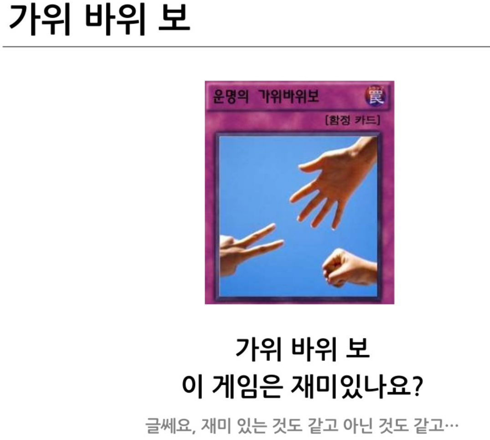
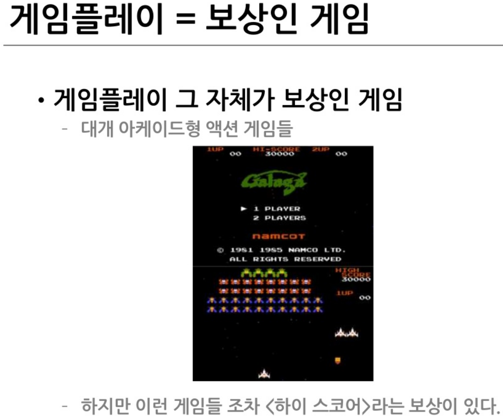
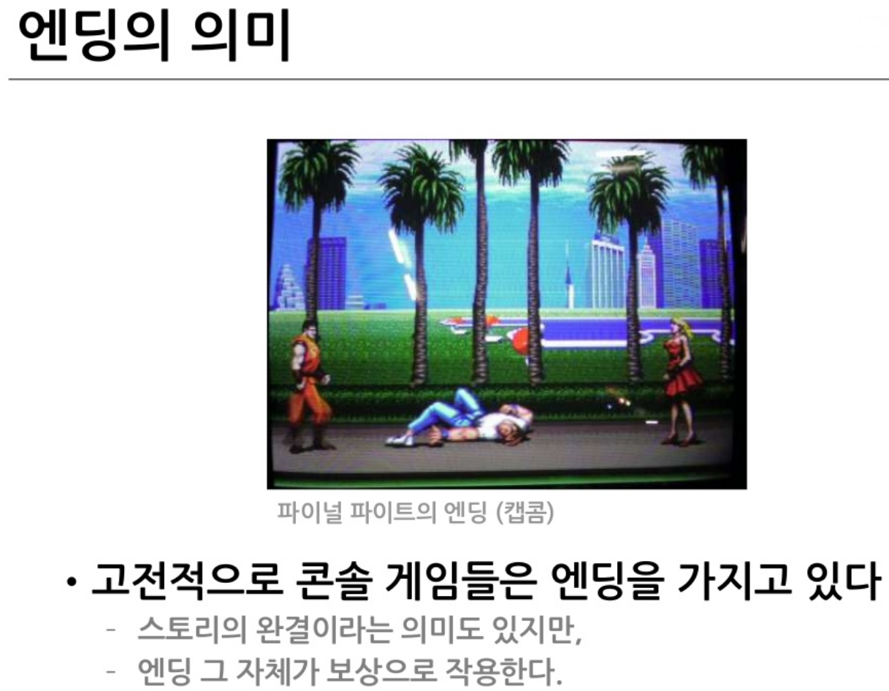
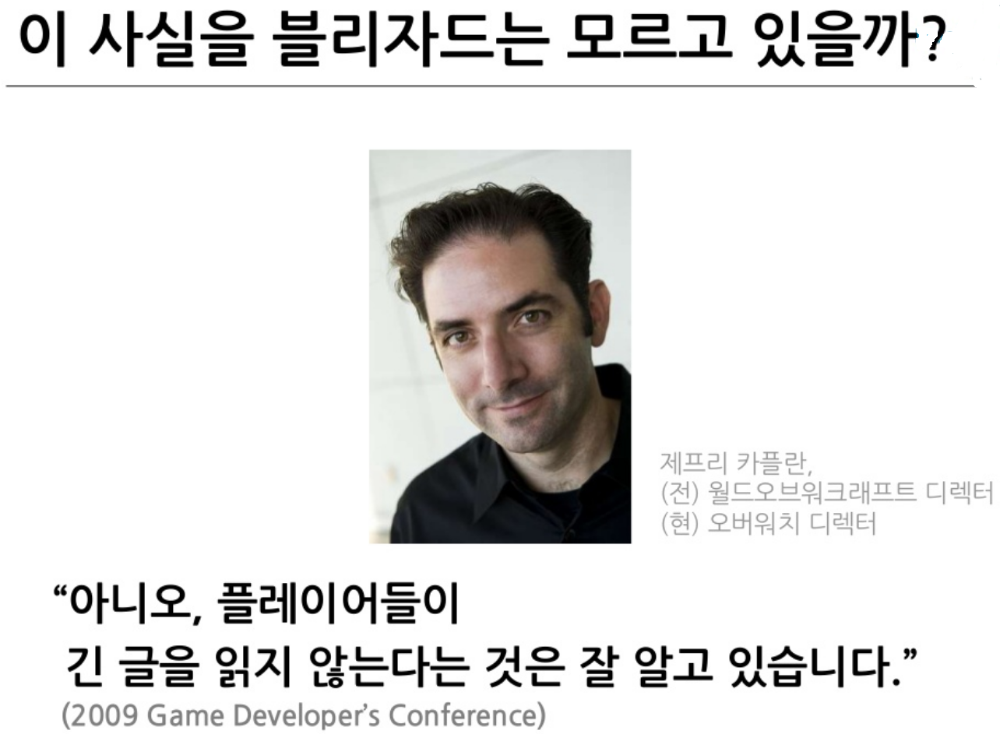
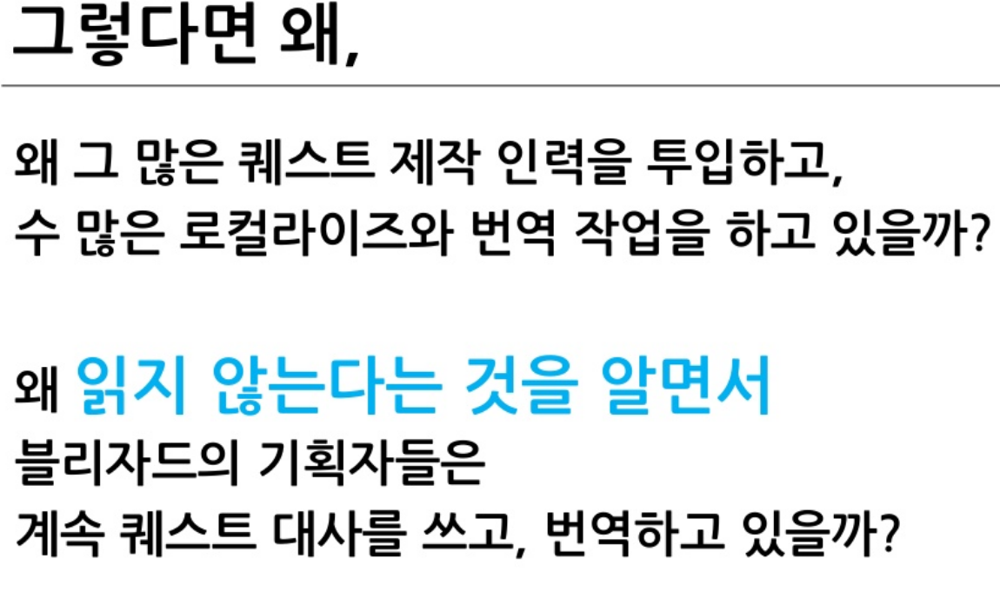
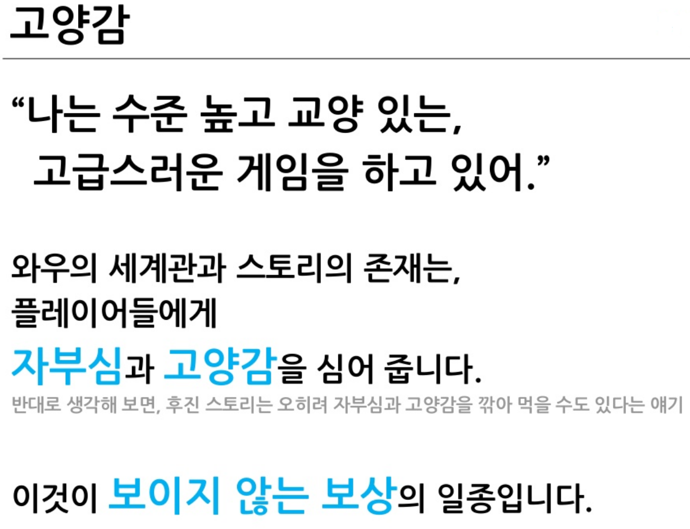
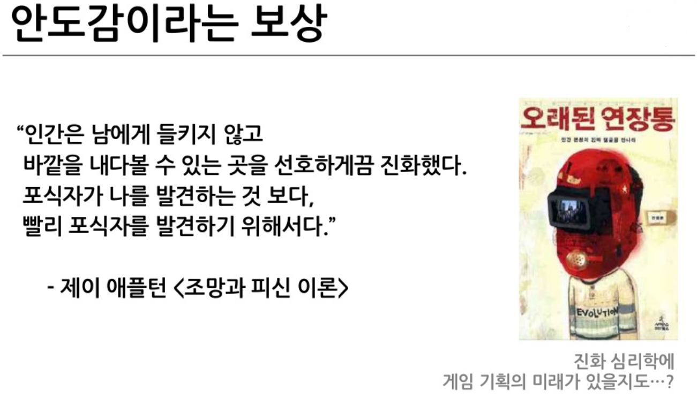

보이는 보상

04 · REWARD

행동의 가치를 확인시키고
다음 반복을 만듭니다.
화면에 표시되는 결과와
플레이어 안에 남는 감정을 함께 봅니다.

결과가 변화를 만들고, 변화가 의미로 느껴질 때
플레이어는 다시 행동합니다.
즉시 반응, 완결의 만족, 감정의 회복은
서로 다른 방식으로 플레이를 지탱합니다.


개발자가 준 아이템보다 플레이어가 느낀 감정이
더 오래 기억될 수 있습니다.




좋은 보상은 물건을 주는 것이 아니라
계속할 이유를 남깁니다.